- Disturbance-aware integrated planning and control. A unified optimization layer directly maps waypoints to control commands under state and disturbance uncertainties.
- Computationally efficient long-horizon optimization. A variable discretization strategy enables real-time performance on resource-constrained platforms.
- Extensive real-world validation. Simulation and hardware experiments demonstrate improved robustness and safety over representative baselines.
Simulation Experiments
We present a comprehensive comparison study conducted in a high-fidelity Gazebo environment to systematically validate the proposed ITPC framework. The evaluation is structured around the following three research questions.
Q1: Can the proposed FR-MHE achieve accurate joint state and disturbance estimation while maintaining real-time computational performance and robustness?
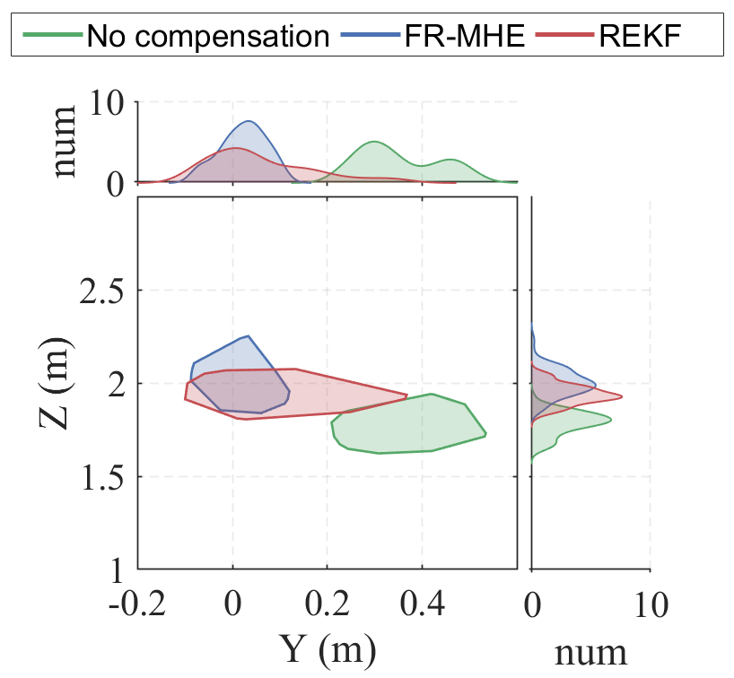
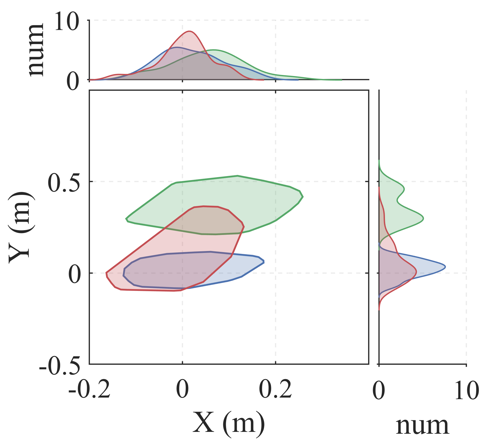
Fig. 3: Hovering experiment results in the Y–Z and X–Y planes.
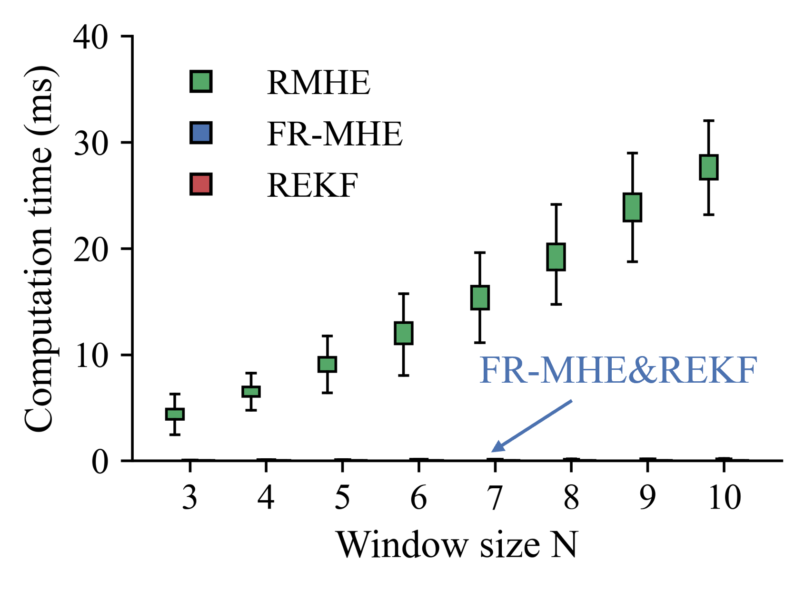

Fig. 4: Computation time comparison of RMHE, FR-MHE, and REKF. Box height denotes the inter-quartile range (IQR).
Q2: Can the ITPC framework remain computationally efficient under disturbance-augmented dynamics and extended prediction horizons?
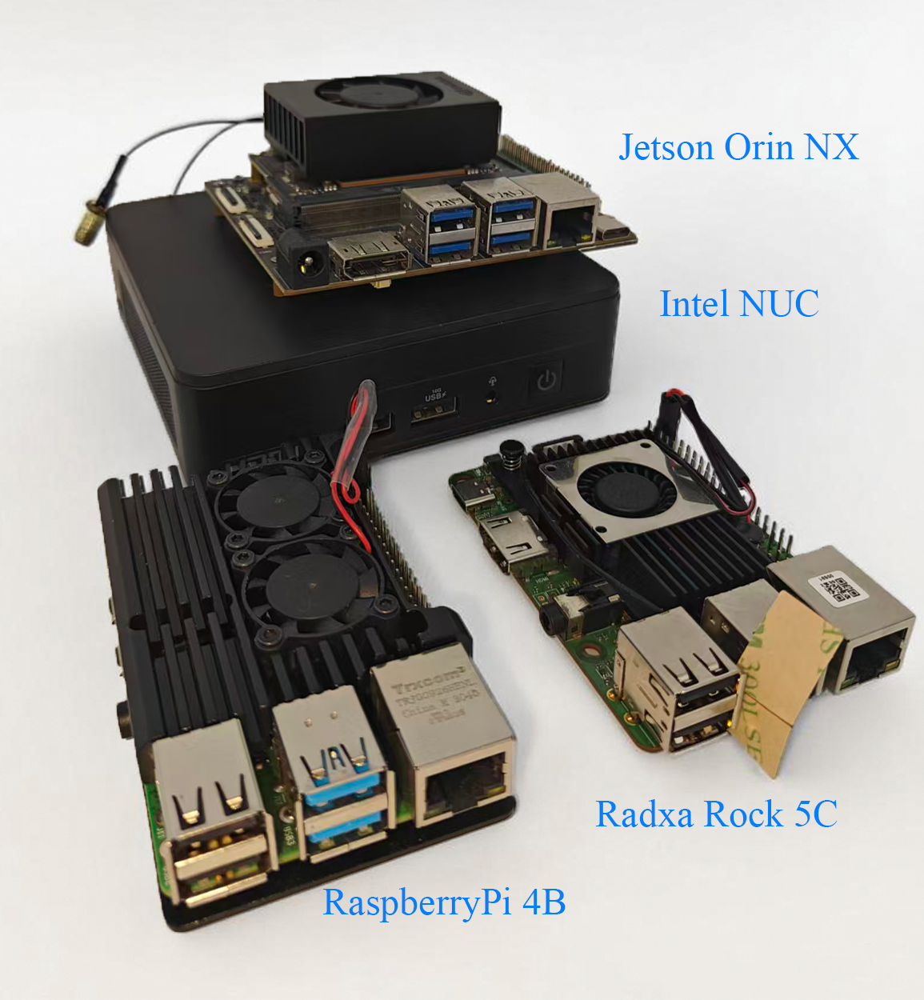
Fig. 5: Platforms used for algorithm evaluation span a wide range of budgets and CPU core configurations.
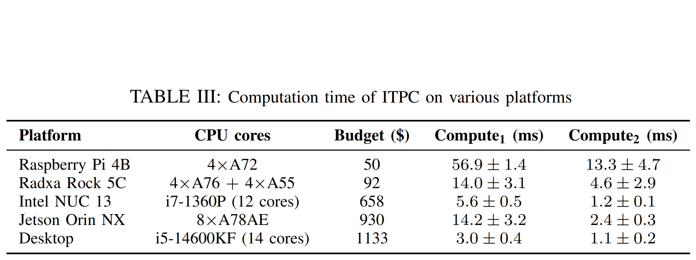
Q3: To what extent does ITPC outperform conventional hierarchical navigation pipelines under non-negligible uncertainties, and can it actively exploit disturbances through integrated design?
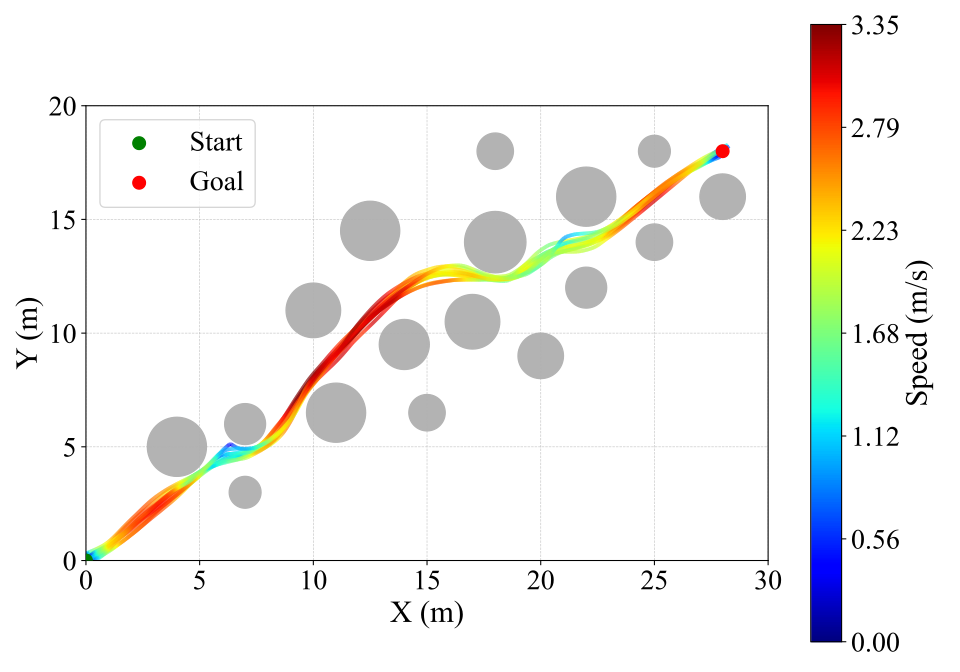
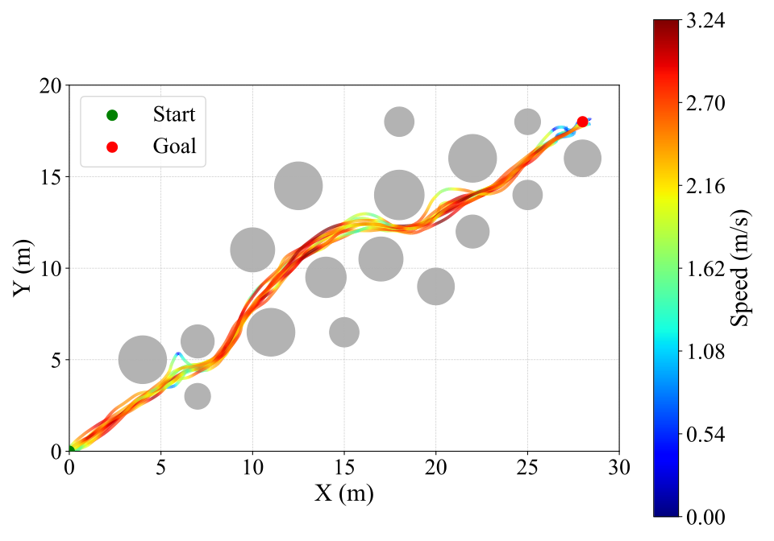
Fig. 6: No wind. Baseline hierarchical pipeline (upper) vs. proposed ITPC (lower).
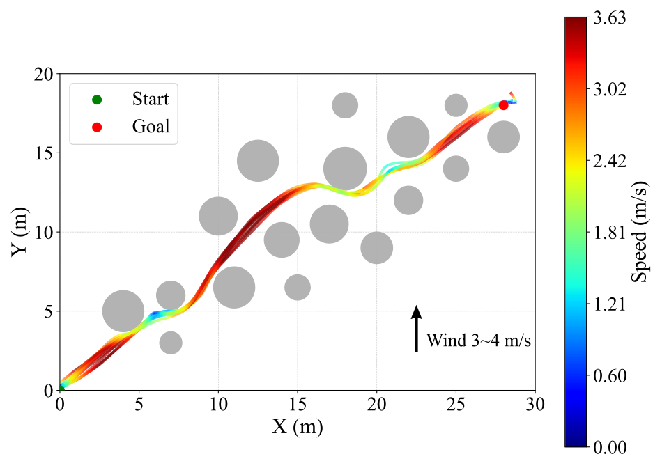
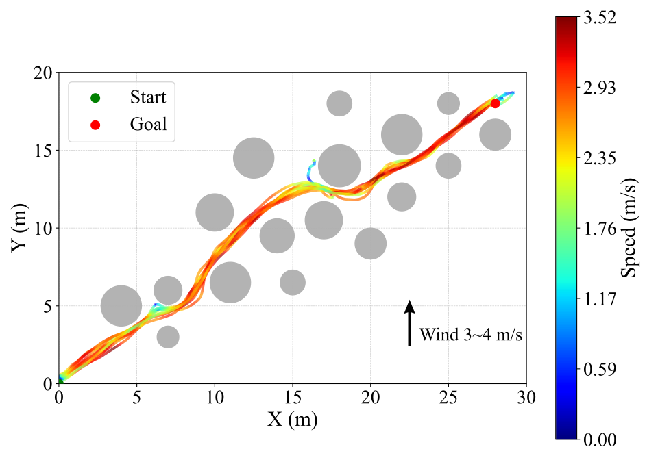
Fig. 7: Wind (3–4 m/s). Hierarchical pipeline vs. ITPC.
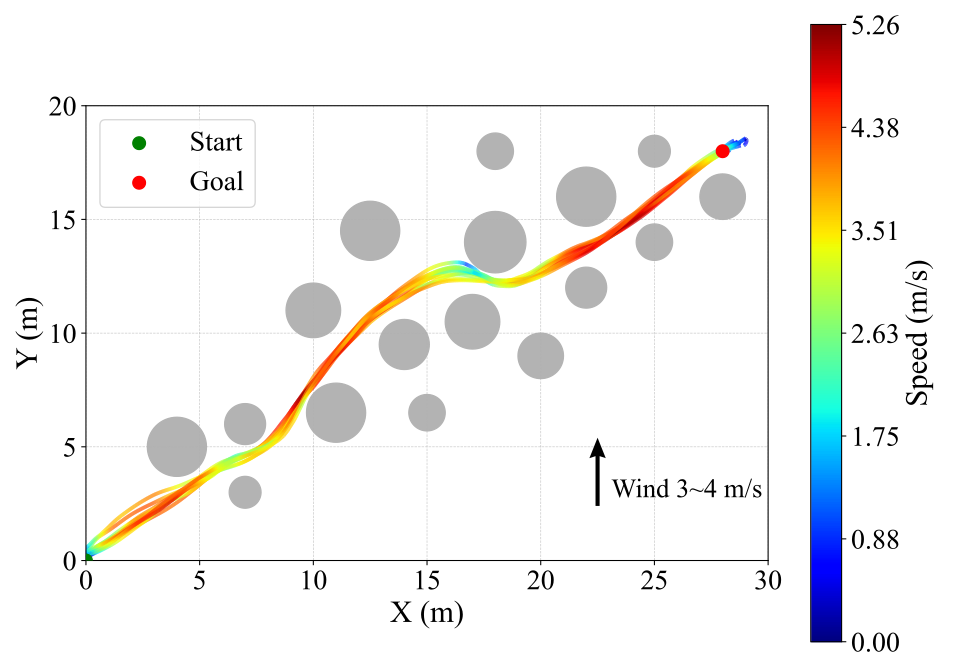
Fig. 8: ITPC without velocity constraint.
We consider three configurations. Note that in this comparison, log-MPPI serves as both the local trajectory planner and the cascaded controller.
- A*+MPPI: path planner + log-MPPI with fixed velocity.
- A*+miniS+MPPI: path planner + global trajectory planner + log-MPPI.
- A*+ITPC: path planner + proposed ITPC.
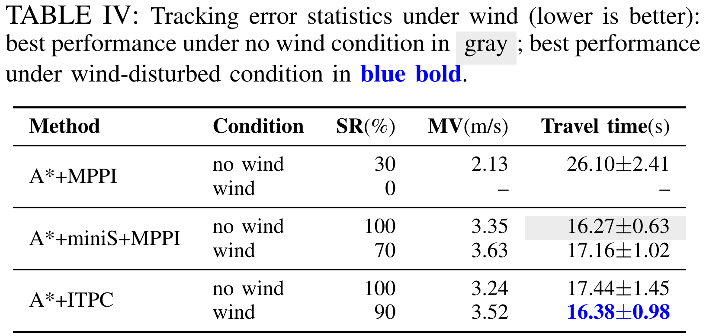
Under nominal conditions, the hierarchical pipeline with minimum-snap planning (case (ii)) achieves the optimal performance due to the time-parameterized global trajectories when disturbances are mild. In contrast, the fixed-velocity baseline (case (i)) exhibits a very low success rate and is therefore omitted from further quantitative discussion. This failure is primarily caused by the aggressive safety radius, which pre- vents the controller from recovering once the system deviates from the nominal path.
When wind disturbances are introduced, the limitations of hierarchical designs become evident. In contrast, the proposed ITPC maintains a 90% success rate under the same conditions, despite only one trial failing to a local minimum stuck case due to the sampling nature of MPPI algorithm, as depicted in Fig. 7.
To further examine the potential of the proposed integrated planning and control, we remove the velocity constraint in ITPC. As shown in Fig. 8, the system achieves smoother and more agile navigation, reaching a maximum speed of 5.26 m/s with a 100% success rate over ten trials. This result demonstrates that eliminating rigid velocity prescriptions and allowing planning decisions to emerge from dynamics- level optimization can unlock additional performance gains, reinforcing the benefits of the proposed integration paradigm.
Simulation Video